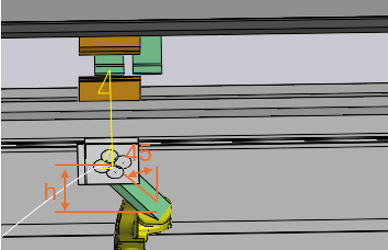
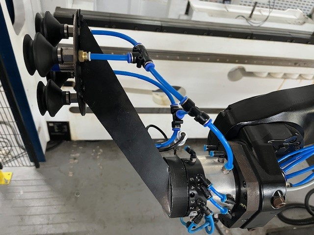
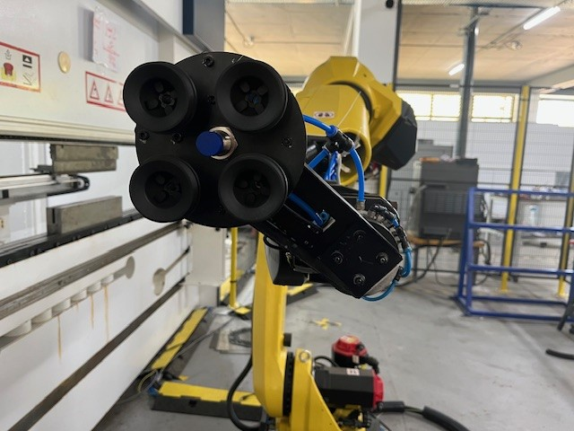
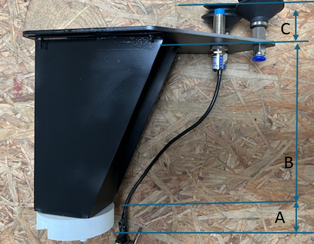

Gripper design
A capable gripper is important that the automated sequencing algorithm is able to find a good solution.
A 45 degree excentric gripper gives the robot the ability to bend two sides of the part without the need of regripping.

It is recommendet that 50mm suction cups are used together with a part detection sensor with a measuring range of 20mm. A exemplaric design could be found in /components/CAD from sheet metal parts as well the STL contour for the import in Flux.
 
The base parts could be laser cut and can be found under
\RoboHW\04_components\Gripper
The 50mm suction cups turn out to be practical Name:SAB50 Radius:28 Height:25.5 OpenHeight:37 Payload:1.5
|
Note
|
always have at least 3 suction cups for a stable situation of the part |
|
Note
|
The Gripper height in the assembled state needs to be measured in the activated state (suction on!). |

The precise calculation of CUPZPOS in .dat is calculated to (see cups )
A = Clutch length (Height of the clutch to the base of the printed counter part: 82mm) B = Adapter length C = Suction cup length.